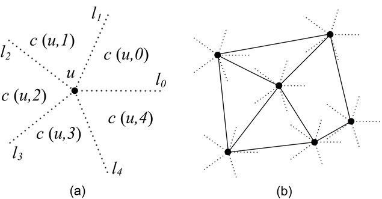
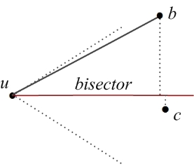
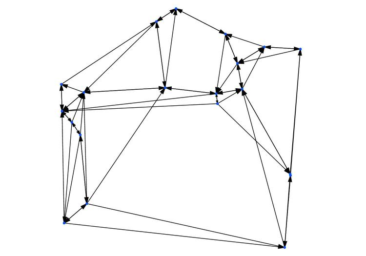
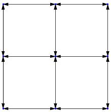
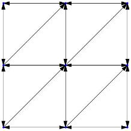

- Generated by
 1.17.0
1.17.0
|
CGAL 6.3 - Cone-Based Spanners
|
This chapter describes the package for constructing two kinds of cone-based spanners: Yao graph and Theta graph, given a set of vertices on the plane and the directions of cone boundaries. Both exact and inexact constructions are supported. In exact construction, the cone boundaries are calculated using roots of polynomials, which achieves the exactness by avoiding using \( \pi \) in the computation. In inexact construction, the cone boundaries are calculated with a floating point approximation of \( \pi \) value and is still accurate enough for most applications. Moreover, for visualization purpose, this chapter describes a global function that, given a constructed graph as input, can generate the data and script files for Gnuplot to plot that graph.
This section gives detailed definitions of Yao graph and Theta graph, which are followed in our implementation. In particular, because this package supports constructing Yao graph and Theta graph exactly, we need to be clear on which cone a cone boundary belongs to. The definitions presented here clarify on this.
Given a set \(V\) of vertices on the plane, the directed Yao Graph with an integer parameter \(k (k > 1)\) on \(V\) is obtained as follows. For each vertex \(u \in V\), starting from a given direction (e.g., the direction of positive \(x\)-axis), draw \(k\) equally-spaced rays \(l_0\), \(l_1\), ..., \(l_{k-1}\) originating from \(u\) in counterclockwise order (see Figure 119.1 (a)). These rays divide the plane into \(k\) cones of angle \(2\pi/k\), denoted by \( c(u, 0), c(u, 1), ..., c(u, k-1)\) respectively in counterclockwise order. To avoid overlapping at boundaries, it is stipulated here that the area of \( c(u, i)\), where \( i=0, \ldots, k-1\), includes the ray \(l_{i}\) but excludes the ray \(l_{(i+1)\% k}\). In each cone of \(u\), draw a directed edge from \(u\) to its closest vertex by Euclidean distance in that cone. Ties are broken arbitrarily. These directed edges will form the edge set of the directed Yao graph on \(V\). The undirected Yao Graph on \(V\) is obtained by ignoring the directions of the edges. Note that if both edge \(uv\) and \(vu\) are in the directed Yao graph, only one edge \(uv\) exists in the undirected Yao graph. Figure 119.1 (b) gives an example of Yao graph with \(k=5\).

Figure 119.1 Cones and an example of Yao Graph with \(k=5\).
Similar to Yao graph, the directed or undirected Theta Graph is also obtained by letting each vertex \(u \in V\) select a closest vertex in each of its cones to have an edge. The only difference is that closest in Theta Graph means the smallest projection distance onto the bisector of that cone, not the direct Euclidean distance. For instance, in Figure 119.2, vertex \(u\)'s closest vertex will be vertex \(b\).

Figure 119.2 The bisector in a cone of a Theta Graph.
Variants of Yao graph and Theta graph are Half Yao graph and Half Theta graph. The difference is that only the edges in the even or odd cones are drawn. For instance, in the even case of the Theta graph with \(k=6\), only the edges in the cones \(c(u, 0)\), \(c(u, 2)\), and \(c(u, 4)\) are drawn.
This package provides the following template functors:
In addition to these functors, for visualizing the constructed graphs, this package provides a global function called CGAL::gnuplot_output_2() to output a boost::adjacency_list data structure to Gnuplot data and script files. Below, we detail the design and the usage of the above functors and function.
The functor Compute_cone_boundaries_2 has the following definition.
The template parameter Traits determines whether the cone boundaries are computed exactly or inexactly. If this parameter is Exact_predicates_exact_constructions_kernel_with_root_of, the computation will be done exactly; if this parameter is Exact_predicates_inexact_constructions_kernel, the computation will be done inexactly. The exact computation is implemented based on the fact that when the cone angle \( \theta \) is in the form of \( 2\pi / n \), where \( n \) is a positive integer, \( \sin(\theta) \) and \( \cos(\theta) \) can be represented exactly by roots of polynomials, thus avoiding using \( \pi \) in the computation. The exact computation requires the number type of either CORE::Expr or leda_real. In inexact computation, the cone angle \( \theta \) is simply calculated as \( 2\pi/k \), where \( k \) is the number of cones and \( \pi \) takes the value of the constant CGAL_PI=3.14159265358979323846. Then, the \( \sin(\theta) \) and \( \cos(\theta) \) are calculated. While the inexact computation is done by the general functor definition, the exact computation is done by a specialization of this functor.
This functor is currently used by the functors Construct_theta_graph_2 and Construct_yao_graph_2 in constructing Theta and Yao graphs. This functor can also be used in other applications where the plane needs to be divided into equally-angled cones. For how to use this functor to compute cone boundaries in writing an application, please refer to Section Examples.
The functor Construct_theta_graph_2 has the following definition
Similar to the functor Compute_cone_boundaries_2, the template parameter Traits determines whether the Theta graph will constructed exactly or inexactly. The template parameter Graph specifies the graph type used to store the constructed graph. Our package requires it to be boost::adjacency_list from the Boost Graph Library (BGL). The advantage of using boost::adjacency_list is that it provides convenience to the further processing of the constructed graphs, since BGL includes most common graph algorithms. Note that BGL altogether provides two template classes for representing graphs: boost::adjacency_list and boost::adjacency_matrix, with the former suitable for sparse graphs and the latter suitable for dense graphs. While cone-based spanners are sparse graphs and the interfaces provided by boost::adjacency_list and boost::adjacency_matrix are different, our package only supports boost::adjacency_list.
Note that there are seven template parameters for boost::adjacency_list in BGL: OutEdgeList, VertexList, Directed, VertexProperties, EdgeProperties, GraphProperties, EdgeList, of which we require VertexProperties to be Traits::Point_2, and other parameters can be chosen freely. Also note that, here we pass Point_2 directly as bundled properties to boost::adjacency_list, because this makes our implementation more straightforward than using a property map. If you want more properties other than Point_2 for vertices, you can still construct external properties by using property maps.
In constructing Theta graphs, this functor uses the algorithm from Chapter 4 of the book by Narasimhan and Smid [2]. Basically, it is a sweep line algorithm and uses a balanced search tree to store the vertices that have already been scanned. It has the complexity of \(O(n \log n)\), where \(n\) is the number of vertices in the plane. This complexity has been proved to be optimal.
For more details on how to use this Construct_theta_graph_2 functor to write an application to build Theta graphs, please refer to Section Examples.
The functor Construct_yao_graph_2 has a similar definition as Construct_theta_graph_2.
The way of using these two template parameters is the same as that of Construct_theta_graph_2, so please refer to the previous subsection for the details. We note here that construction algorithm for Yao graph is a slight adaptation of the algorithm for constructing Theta graph, having a complexity of \(O(n^2)\). The increase of complexity in this adaptation is because in constructing Theta graph, the searching of the 'closest' node by projection distance can be done by a balanced search tree, but in constructing Yao graph, the searching of the 'closest' node by Euclidean distance cannot be done by a balanced search tree.
Note that an optimal algorithm for constructing Yao graph with a complexity of \(O(n \log n)\) is described in [1]. However, this algorithm is much more complex to implement than the current algorithm implemented, and it can hardly reuse the codes for constructing Theta graphs, so it is not implemented in this package right now.
This package also implements a template function CGAL::gnuplot_output_2(), which reads a boost::adjacency_list object and generate two files used by Gnuplot to visualize the graph stored in the boost::adjacency_list object. This template function has the following definition:
The template parameter Graph_ specifies the type of the graph to be plotted. For this function to work, the graph type must be boost::adjacency_list with Point_2 as the VertexProperties. As for the two arguments to the function, g gives the graph to be plotted, and prefix gives the prefix for the names of the files generated by the function. Specifically, this function will generate the following two files:
For details on how to use this function to generate Gnuplot files, please refer to Section Examples.
The following example shows how to compute the directions of the cone boundaries exactly given the cone number and the initial direction. This example basically consists of the following steps:
Example: Cone_spanners_2/compute_cones.cpp
Note that, in this example, for any k<=28, the computation can be done successfully; for any k>28, the computation cannot be completed because CORE::Expr, which we use as the number type for the exact kernel, exceeds its limit. It seems that k<=28 will suffice for most applications. Also, if inexact computation is used, the computation will be successful for any k>1, and much quicker than exact computation. We also note here that we don't experiment with leda_real.
As a final note, to compute the cone boundaries inexactly, just define the Kernel to be Exact_predicates_inexact_constructions_kernel in the above example.
The following example shows how to construct Theta graphs exactly and generate Gnuplot files. This example basically consists of the following steps:
Example: Cone_spanners_2/theta_io.cpp
To construct Theta graphs inexactly, just define the Kernel to be Exact_predicates_inexact_constructions_kernel in the above example. And the way of constructing Yao graphs exactly or inexactly is the same as that of constructing Theta graphs, just replacing the functor Construct_theta_graph_2 by the functor Construct_yao_graph_2.
Note that, for Theta graph, the Kernel defined must support the CGAL::sqrt() operation. This is required by the bisector() function, which is used to calculate the angle bisector of a cone. For instance, the compiler will complain if Exact_predicates_exact_constructions_kernel (not supporting CGAL::sqrt()) is defined as the kernel, but Exact_predicates_inexact_constructions_kernel will be fine since it supports CAL::sqrt(). For Yao graph, there is no such restriction, since its construction does not need CGAL::sqrt().
Also note that when using g++ or clang++ compilers with the c++11 standard, using a directed graph will cause a compilation error due to a bug in the boost library. As a workaround you can use a undirected graph instead.
After compiling theta_io.cpp, execute the executable theta_io to construct a Theta graph with 4 cones on a set of 20 vertices (which is given in the file data/n20.cin):
The following two files will be generated for Gnuplot:
Figure 119.3 shows the Theta graph plotted when the above t4n20.plt is loaded by Gnuplot.

Figure 119.3 A directed Theta graph of 20 vertices with \(k=4\).
By default, the functors Construct_theta_graph_2 and Construct_yao_graph_2 construct full Theta and Yao graphs. They also provide a way to compute Half Theta and Yao graphs. As mentioned in Section Definitions, only the edges for the odd or even cones are added to the graph in an Half Theta and Yao graph. To do so, the constructor of the functors provides a parameter of type Cones_selected which is an enumeration that contains the following possible values: ALL_CONES, EVEN_CONES and ODD_CONES. Users should include the CGAL/Cone_spanners_enum_2.h header file to use these enum values. The following are the examples on the functor constructions for Half Theta and Yao Graphs.
This subsection gives an example vertex set on which the exact construction provided in this package can produce the correct Theta graph while the inexact construction cannot.
This vertex set, given in the file examples/data/n9.cin, consists of 9 vertices with the following \((x, y)\)-coordinates:
If we construct the directed Theta graph on this vertex set with \(k=4\) and its cone boundaries on the \(x\) and \(y\) axis, the exact construction will produce the Theta graph shown in Figure 119.4. Based on our definition on Theta graph presented in the Section Definitions, we can verify that the Theta graph in Figure 119.4 is correctly constructed.

Figure 119.4 The correct Theta graph produced by the exact construction.
On the other hand, the inexact construction will produce the Theta graph depicted in Figure 119.5. We can see that this Theta graph is not constructed correctly, since the inexact construction will make wrong decisions on whether those vertices on the cone boundaries belong to a certain cone.

Figure 119.5 The incorrect Theta graph produced by the inexact construction.
This example demonstrates that the exact construction capability provided by this package can be very valuable if it is a strict requirement that graphs be constructed correctly.
The following example, 'dijkstra_theta.cpp', shows how to call algorithms from BGL to do further processing after the graphs are constructed. Since the constructed Theta or Yao graphs are stored in the class boost::adjacency_list, it is convenient to apply BGL algorithms into the constructed graphs. Specifically, this example constructs a Theta graph first and then calculates the shortest paths on this graph by calling the Dijkstra's algorithm from BGL. It mainly consists of the following steps:
Example: Cone_spanners_2/dijkstra_theta.cpp